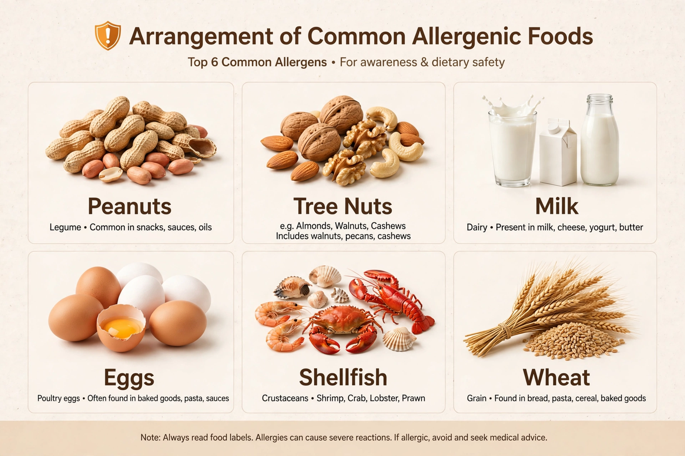

A food allergy is an adverse immune response to a food protein. In the most common form, the immune system produces immunoglobulin E (IgE) antibodies against a normally harmless food; on re-exposure, the antibodies trigger mast cells to release histamine and other mediators, causing symptoms within minutes to two hours. Reactions range from mild hives to life-threatening anaphylaxis. Food allergy differs from food intolerance, such as lactose intolerance, which does not involve the immune system.

| Food allergy | |
|---|---|
| Specialty | Allergy and immunology |
| Symptoms | Hives, swelling, vomiting, breathing difficulty, anaphylaxis |
| Common triggers | Peanut, tree nuts, milk, egg, shellfish, fish, soy, wheat, sesame |
| Treatment | Avoidance; epinephrine for anaphylaxis; oral immunotherapy |
Symptoms may affect the skin (hives, eczema, swelling of lips and tongue), the gut (vomiting, diarrhoea, abdominal pain), and the airways (wheeze, throat tightness). Anaphylaxis is a severe, systemic reaction involving breathing difficulty and a drop in blood pressure that can be fatal without prompt treatment with intramuscular epinephrine (adrenaline).
Regulators in the United States require labelling of nine major allergens: milk, eggs, fish, crustacean shellfish, tree nuts, peanuts, wheat, soybeans, and sesame. Peanut and tree-nut allergies are among the most likely to be lifelong and to cause severe reactions, whereas milk and egg allergies in children are often outgrown. Wheat allergy is distinct from coeliac disease, the autoimmune reaction to gluten.
Why some people become sensitised to foods is not fully understood. The dual-allergen-exposure hypothesis proposes that exposure through inflamed skin (as in eczema) promotes allergy, while early oral exposure promotes tolerance — a model supported by trials showing that early introduction of peanut reduces peanut allergy. Genetics, the gut microbiome, and vitamin D status may also play roles.
Diagnosis combines the clinical history with skin-prick tests or blood tests for food-specific IgE. Because these tests have high false-positive rates, the double-blind, placebo-controlled food challenge is the reference standard. Unvalidated tests such as IgG panels and hair analysis are not recommended.
The mainstay is strict avoidance of the trigger food, careful label reading, and an emergency plan. People at risk of anaphylaxis carry epinephrine auto-injectors. Oral immunotherapy — gradually increasing doses of the allergen under supervision — can raise the threshold for reactions; a peanut-based product (Palforzia) was approved in the United States in 2020, and the anti-IgE antibody omalizumab was approved for food allergy in 2024.
Food allergy affects roughly 8% of children and 6–10% of adults in Western countries, and prevalence appears to have risen over recent decades.